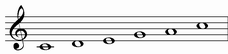
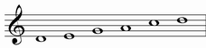
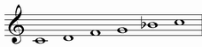
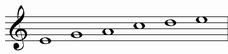
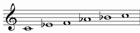
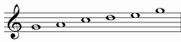
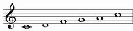
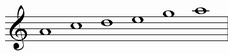

| GRADE | NAME | NOTES | NOTES TRANSPOSED IN C |
| I | MAJOR PENTATONIC |  | |
| II | SUSPENDED PENTATONIC |  |  |
| III | MAN GONG |  |  |
| IV | RITUSEN |  |  |
| V | MINOR PENTATONIC |  | |
MAJOR PENTATONIC |
It starts from the first grade of major pentatonic scale
Structure: 22323
| chords over first notes: |
| Triad: |
| major |
 |
Chord simbols: C, Cmaj7, C6, C^, Cmaj7(9), C^9, C6/9
SUSPENDED PENTATONIC |
Alternative names: Yo, Egyptian
It starts from the second grade of major pentatonic scale
Structure: 23232
As we can see from the structure, this is a palindromic mode
Chord simbols: C7sus, C9sus
MAN GONG |
It starts from the third grade of major pentatonic scale
Structure: 32322
RITUSEN |
It starts from the fourth grade of major pentatonic scale
Structure: 23223
MINOR PENTATONIC |
|
It starts from the fifth grade of major pentatonic scale
Structure: 32232
| chords over first notes: | |
| Triad: | Seventh chord: |
| minor | minor seventh |
 |
 |
Chord simbols: Cm, Cm7